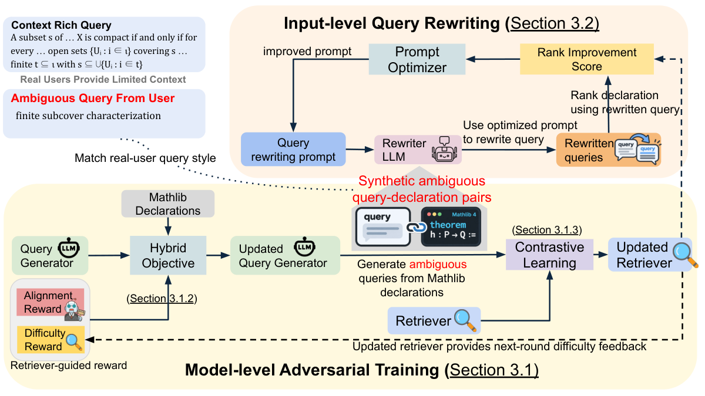

Builds a semantic search engine over Mathlib declarations, trained with adversarially generated ambiguous queries, and integrates it with Claude Code for Lean theorem proving.
Abstract
We introduce Lean Finder V2, a semantic search framework for Mathlib that disambiguates user queries through complementary model-level adversarial training and input-level query rewriting. Human mathematicians and coding agents rarely search Mathlib by providing detailed context. In practice, they query short properties, notation, aliases, or hypotheses, leaving much of the intended mathematics implicit. In contrast, existing Mathlib search engines unrealistically assume context-rich queries. The scarcity of real-world short queries paired with ground-truth Mathlib statements makes this ambiguity even more intractable. We argue that this is essentially a data problem. Through adversarial training, we scale up the generation of labeled short and ambiguous queries, and learn to disambiguate user queries at both model-level fine-tuning and input-level query rewriting. On the human-curated MathlibQR benchmark, our Lean Finder V2 sets a new state of the art, with at least 11% relative improvement over the previous best Mathlib semantic search engines. On top of our state-of-the-art retriever, optimized query rewriting further improves MathlibQR retrieval. On unlabeled queries from human and coding-agent interactions, Lean Finder V2 is ranked as the strongest system. Integrated with Claude Code, Lean Finder V2 improves proof success on downstream theorem-proving task. Lean Finder V2 is available at: https://leanfinder.github.io/
Problem
Mathematicians and coding agents usually search Mathlib with short, ambiguous queries such as properties, notation, aliases or hypotheses. Existing Mathlib search engines assume context-rich queries. Labeled short queries paired with ground-truth declarations are scarce.
Approach
A query generator (Qwen3-4B) is trained with RL plus SFT, using a reward that combines retrieval difficulty from the current retriever with query-declaration alignment judged by an LLM. Its faithful but ambiguous queries are used to fine-tune a Qwen3-Embedding-8B retriever, and the generator and retriever alternate over two rounds. The same synthetic pairs are used to optimize a query-rewriting prompt with GEPA, which makes implicit intent explicit before retrieval.

Figure 2: Lean Finder V2 disambiguates Mathlib queries at two complementary levels. Model-level adversarial training (Section 3.1 ) uses a hybrid objective that combines reinforcement learning and supervised fine-tuning with retriever-guided difficulty rewards to incentivize the query generator LLM to generate faithful, challenging, and ambiguous queries for Mathlib declarations. Contrastive learn
Results
On the MathlibQR benchmark, nDCG@1 reaches 0.558 versus 0.470 for the best prior system, at least an 11% relative gain. The system is ranked best by LLM judges on unlabeled human and agent queries. When integrated with Claude Code, it raises the downstream proof pass rate to 39.3%, compared with 34.0% using no semantic retrieval tool.